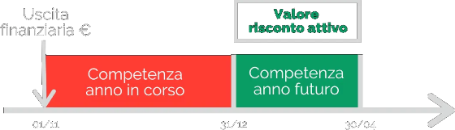

Scritture di rettifica di costi e ricavi (risconti)
La registrazione contabile dei Ratei e Risconti rientra tra le scritture di assestamento del bilancio. Le scritture di assestamento sono scritture contabili che servono a determinare la corretta competenza economica degli eventi aziendali contabilmente rilevanti.
Il principio della competenza economica afferma che il Conto Economico riferito ad un dato periodo deve contenere soltanto quelle componenti di reddito sostenute effettivamente nel periodo, prescindendo dalla loro manifestazione finanziaria.
Da un punto di vista di Conto Economico, la realizzazione dei ricavi e il sostenimento dei costi sono del tutto slegati dal concetto di “denaro” o di “entrata di cassa”. Questo vuol dire che io posso conseguire un ricavo in dato momento anche se incasserò questo ricavo più avanti nel tempo. Questo concetto è strettamente legato al fatto che l’ottenimento di un ricavo genera da un punto di vista contabile (e quindi di partita doppia) un corrispondente credito. Credito che verrà poi saldato al momento dell’incasso.
I risconti attivi e passivi rappresentano quote di costi e di ricavi che hanno avuto manifestazione finanziaria nell'esercizio, ma che devono essere riferiti a processi produttivi che troveranno compimento negli esercizi futuri. I risconti attivi rappresentano crediti per servizi da ricevere, ma che sono stati già pagati; i risconti passivi rappresentano debiti per servizi già pagati, ma che devono ancora essere erogati. Il caso più frequente riguarda i risconti attivi, di cui rappresentiamo un esempio.
I risconti attivi rappresentano oneri differiti ad uno o più esercizi successivi e pertanto è necessaria la valutazione del futuro.
I risconti passivi rappresentano proventi differiti ad uno o più esercizi successivi e pertanto è necessaria la valutazione del futuro. Sono risconti passivi i seguenti esempi quando si riferiscono a operazioni a cavallo fra più esercizi:
interessei attivi anticipati;
affitti attivi riscossi anticipamente.
L’esempio più semplice è l’affitto, quando il suo contratto ha una durata a cavallo tra due anni.
Risconti attivi = costo x gg compentenza anno prossimo/giorni totali
Esempio. Firmiamo il contratto d’affitto al 1° di novembre e paghiamo in anticipo la rata semestrale. Il valore della rata è di 6.000 €.
Risconti attivi = 6000 x 120/80 = 4000
Per facilitarne la comprensione, i risconti attivi possono essere rappresentati graficamente con la linea del tempo:
In questo caso, si registrerà un risconto attivo di 4.000 €. Questo è infatti il valore del fitto di competenza dell’anno futuro.
Esempio di scritture contabili
Una volta compreso come si calcolano i risconti attivi, dobbiamo registrarli a livello contabile. Per comprendere meglio il loro utilizzo, vediamo tutte le scritture in partita doppia, dalla prima registrazione del costo, sino alla riapertura del bilancio.
Rilevazione del costo (1° novembre): rileviamo il sorgere del debito in seguito alla stipulazione del contratto di affitto. Nei mastrini rileveremo:
costo ‘affitti passivi’ in conto economico;
‘debiti verso fornitori’ in stato patrimoniale.
Rettifica del costo (31 dicembre): essendo parzialmente di competenza dell’anno prossimo, il costo in conto economico deve essere rettificato. In questo modo rileveremo:
quota di competenza dell’esercizio successivo della attività ‘risconti attivi’ in stato patrimoniale;
rettifica del costo ‘affitti passivi’ in conto economico.
Risconti Attivi Dare Avere 4000€ Affitti Passivi Dare Avere 4000€
| Affitti Passivi | |
|---|---|
| Dare | Avere |
| 6000€ | |
| Affitti Passivi | |
|---|---|
| Dare | Avere |
| 6000€ | |
Ratei
Il rateo attivo è una quota di ricavo (un’entrata futura, in corso di maturazione) di competenza dell'esercizio in corso (a cui si riferisce il bilancio) che verrà liquidata nell'esercizio successivo.
I ratei passivi sono quote di costi di competenza dell'anno corrente, ma che verranno pagati in un esercizio futuro. Di fatto, i ratei passivi si realizzano quando l'azienda sostiene dei costi che maturano a cavallo tra due esercizi e che verranno liquidati solo al termine del periodo.